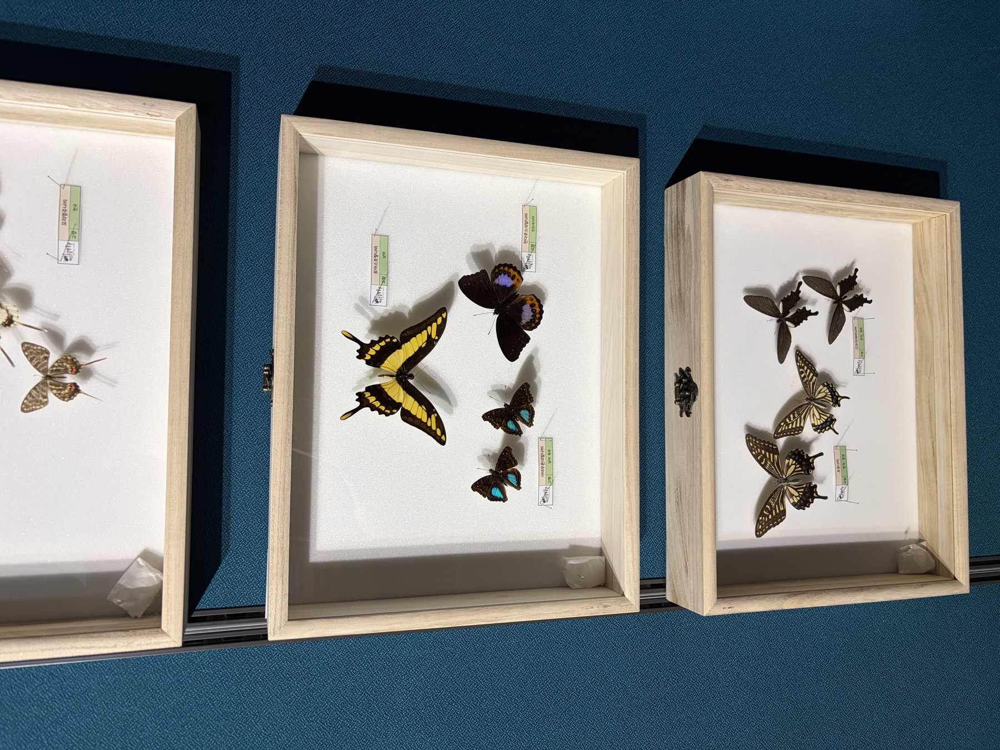
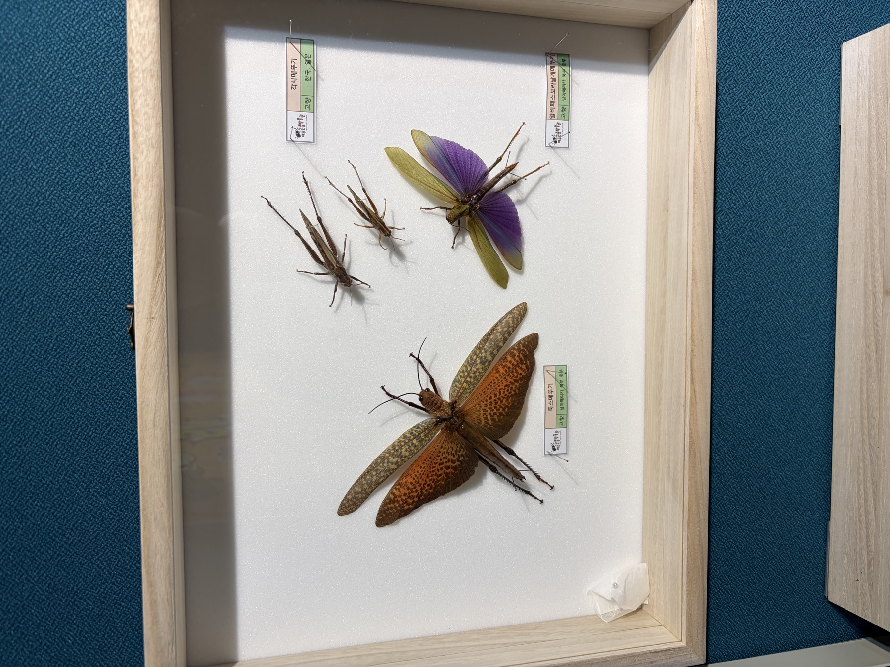
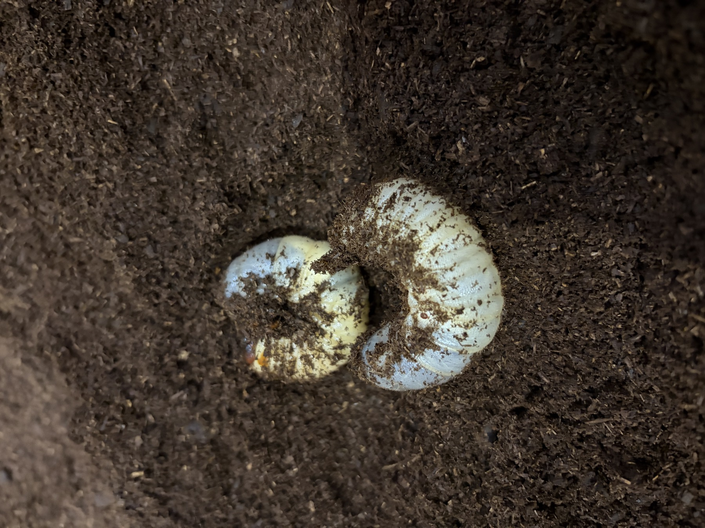

딸아이와 곤충박물관에 다녀왔다.
나 혼자였다면 평생 갈 일 없었을 장소다. 벌레를 딱히 싫어하진 않지만, 일부러 찾아갈 이유도 없는 인간이니까. 하지만 언제나 그렇듯, 딸을 위해 나선 걸음이 결국 나한테도 재밌어지는 순간이 온다.

들어가자마자 규모에 놀랐다. 손바닥만 한 딱정벌레부터 팔뚝만 해 보이는 대형 열대 곤충 표본까지, 형광 초록에 메탈릭 파랑, 새빨간 빛깔까지 색도 다양했다. 딸아이는 눈을 반짝이며 이 곤충 저 곤충 앞을 뛰어다녔고, 나는 뒤에서 설명판을 읽어주는 역할을 맡았다.
가장 기억에 남는 건 살아있는 곤충 체험존이었다. 사육 중인 웜(worm)을 직접 손에 올려볼 수 있는 코너가 있었는데, 나는 솔직히 별로 내키지 않았다. 꿈틀거리는 걸 맨손으로 만지는 감각은 나이를 먹어도 도무지 익숙해지지가 않는다.

망설이고 있는 나를 보더니, 딸아이가 툭 던진 한마디.
"아빠, 쫄?"
그 한마디에 더 이상 고민할 여지가 없었다. 망설임 없이 손을 내밀어 웜을 올렸다. 결과적으로는 별거 아니었고, 딸은 그런 나를 보며 신나게 웃었다. 아빠 체면이 뭐라고, 딸의 도발 한마디에 이렇게 쉽게 무너지는 건지.

돌아오는 길에 생각했다. 나 혼자였으면 절대 안 갔을 곳에서, 나 혼자였으면 절대 안 만졌을 걸 만졌다. 그런데도 오늘 하루가 유독 즐거웠던 이유는 뻔하다. 옆에 딸이 있었으니까.
귀여운 녀석 같으니.